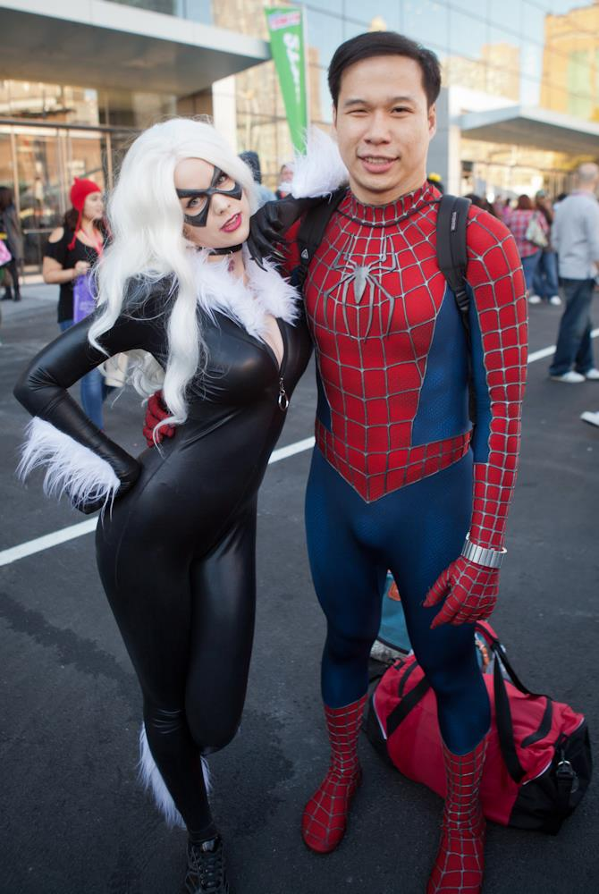
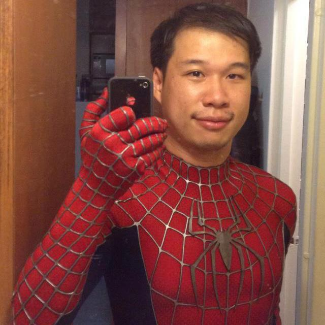

Author
Michael Wang & Ray Tsai
Published
May 1, 2014
Andy was lugging around a big blue case when we met him for coffee on a chilly Sunday afternoon at the Starbucks near Washington Square Park.
“This is the reason I got out of bed,” he stated without any irony in his voice as he unlocked the case to show us what was inside. With all the comfort of someone who’s done this many times, he casually pulls out a Canon 5d Mark III body, a high end digital camera used by professional photographers.
If you’ve browsed through any of TAP-NY’s photos in the past few years, chances are you’ve seen Andy’s work. Ever since he heard about TAP on Facebook a few years earlier, Andy has been a staple at all of TAP’s major pillar events.

Andy posing with Black Cat at the 2013 New York Comic Con
So you were saying you used to live around this area?
I went to school around here. I went to college right here.
NYU?
Yeah. And I would find myself sitting somewhere around here just doing my work or the library right over there. This is where I would considered home.
So remind me what you studied again. I forget.
I studied biology and biochemistry here, and a little bit of computer applications at NYU. And I lived right around the corner. There’s a resident hall right now University Place and I was a RA there for a year, my last year. Yeah, I chose this place because it’s homey and I remember a lot about it.
Where do you live now?
I live in Brooklyn. I live in East Flatbush, right next to SUNY Downstate Medical Center, where I go to school now for my Phd in Neuroscience.
And you were saying you don’t really have a space anymore?
Yeah that’s true. My lab is my space now. Because it’s a different environment once you transition from the college life to a graduate life and a semi-adult life. My life is in the lab, and when it’s not at lab in my lab, I find myself in my room or coming back to Manhattan either somewhere around this area or trying other things, because you just have to get away sometimes.
I don’t know if I would actually recommend that life to other people unless you’re really aggressive, really passionate about it, or really want to be the top of your field. And I realized that that wasn’t me.
What’s your lab like?
I don’t know how much research or anything you guys did in the past, but it’s pretty standard. It looks looks like a high school - brick hallways, a big gigantic clock and lockers, stuff like that.
Would you call it welcoming?
Not really. Science labs are generally not as attractive, although my lab did just get a new paintjob. You have the shelves and all the bottles of buffers and things you need to use. You have your pipettes and stuff.
Do you feel pretty passionate about that kind of stuff?
I used to. I’ll be very honest about that, but you don’t have to write that down.
I’m going to write it down.
Haha you filter out what you need to filter out. I used to, because I felt that there was a lot of potential for scientific discovery. But after being through it, I realized that it’s very restricting, and there wasn’t as much opportunity as I thought there was. And education is definitely changing. I had a lot of teaching experience here at NYU. So I thought I wanted to pursue an academic career as a faculty member perhaps, teaching college courses and things like that. So this is probably the natural progression to get a Phd in the sciences and something like that. But my experience is not exactly as I had expected. People always sell the positive aspects of the careers like medicine and science and law. Like oh this and that and the salary and the benefits and all this other stuff, but they don’t really advertise all the negative aspects of it like the sacrifices you have to make and that type of stuff. But you only learn that stuff when you go through it. But don’t get me wrong - it was a great learning experience, but I don’t know if I would actually recommend that life to other people unless you’re really aggressive, really passionate about it, or really want to be the top of your field. And I realized that that wasn’t me.
So what do you want to do?
That’s still up in the air, but thanks to my creativity actually I uhh…
Was it a nice transition?
It is.
I kinda want to ask about the whole photography/acting.
You can think of it roughly as a left brain, right brain type of thing. Being in the science environment is very restricting. You’re pretty much limited to a certain skill set. And because running on government funding, I can only work on the projects and ideas that they approve of. It’s very tough to get government funding so I lost that creativity. A lot of the projects are funded by my mentors’ ideas and not my own. So I had to look for other creative avenues. So that’s where the photography and the acting came from, because it allowed me to utilize my creative side and my emotions. Because you don’t really showcase your emotions so much in science.
Can you talk about your first forays into acting?
Don’t get me wrong - I’m not professional. I would like to see where I could go with this. I don’t have any formal training in acting. I did at one point want to attend NYU’s school of the arts right down the block. They have a very well-known program. A lot of famous actors and actresses have graduated from here. But eventually I decided on science and that type of thing. So how did I stumble upon this? Because that’s essentially how it always starts out. You stumble upon it. You go like I want to try this and do new things.
Do you feel like you always had an affinity towards acting?
I always had an affinity for the arts. Anything creative. I was an artist when I was in high school. I was always drawing and sketching. But then I put that on hold when I focused on the science aspects. So all that creativity I just focused on what I had at the time when I had free time.

Andy posing with Black Cat at the 2013 New York Comic Con
Do you feel like your asian heritage played a role in that decision?
In my decision to push aside the arts? Absolutely, I really do feel like that because of the Taiwanese and I guess East Asian, non-Western mentality, I guess it’s applicable to a lot of heritages, to actually pursue traditional, prestigious, stable careers as opposed to pursue the more predictable, not-so-stable, creative fields that you hear about. You’re never encouraged to become an athlete, a basketball players, things like that. Definately not an actor, not a musician. You learn the skills to be a musician, but you don’t pursue music as a career. You would never do that unless you’re really good at it, and you win awards year after year, and then fine, maybe it’s fine to become a musician.
Why do you think that is? Why are Asians pushed towards learning music?
That is a good question. I never really understood it. I was pushed when I was younger by my father. I learned the piano for about 10 years. II had lessons every Sunday. He would accompany me. My father sang opera for a long time. I’m his only son. I’m his only child.
Did he sing professionally?
No, I think he had some vocal training, but he just did it on the side I guess.
Even as an adult?
Yes.
So you got to see him perform sometimes, right?
Yeah, but just in front of family gatherings and things like that. My father was always the singer in the family. We’d always have these family videos of him singing and me playing the piano to his singing. Mostly classical musical, all classical music. But unfortunately I never latched onto the classical musics, because it was forced on me I guess. I never got to develop a natural affinity for it. Although, I appreciate his motivation to teach me discipline, to just stick through it, these important values of hard work, practice, and sticking with something, even though it’s hard and may not come easy at first. So I appreciate that, and I have this appreciation of having something to talk about, and this greater appreciation of music. I know how to sight read, so I can use that to apply to other things. And eventually I learned to play the guitar.
Self-taught?
Yeah, like YouTube. Although I would like to go to classes. I’m more of a class-learning person.
I’d like to go back to your acting career.
Like I said, it was an accident, and I stumbled upon it because of… You know, it depends on the times that you live in, and it depends on the times. Because of the events that were going on in my life at the moment with my science career, I started looking for other creative avenues. My friends were getting kind of scarce at the time. It was difficult to maintain friendships, because everyone was either studying, or they were getting married and having kids. It was kind of difficult for me to find regular people to hang out with. And it happens naturally after college. You have to actually put in effort to maintain these things or seek out people as opposed to in the college environment, when everybody lives together. So I started looking for hobbies that I could do on my own, things that would actually make me a better person. So because of the events that were going on in my life that I could probably eventually talk to you about, I was reading up on blogs about… I’m a big comic book an appreciator of comics. I don’t have stacks of comic books to the ceiling, but I appreciate the occasional Marvel or DC movies that come out over the summer.
Spiderman in particular?
Yes
I’ve been meaning to ask about this. Can you tell us more about that?
Okay sure, I have to think about that, but that’s usually my secret baby project. But I have been teasing out little things here and there. This doesn’t need to go in the interview. There’s an unique twist to this that Ray might know about, because we talked about it over the ski trip. So eventually how I got into the whole acting things - it’s an addictive thing. Since I’m an appreciator of comic movies, I saw on a blog that they were casting for The Amazing Spiderman 2 in New York City. Spiderman 2 was one of the first movies in New York City to be completely filmed within New York, and that was a big deal. So yeah, they were filming all over New York City, and I thought that was exciting so I first started out visiting the sets. So I would find out where they were filming on a certain day or night, and I would go hang out and see if I could see any glimpses of the stars, and I did. I eventually did meet Andrew Garfield and Emma Stone on set after they were filming. They were very nice to meet some of their fans. It’s kind of the highlight of the day, after they were just rehearsing lines and getting filmed all day, it’s kind of nice to just relax and meet the people that were actually seeing them in the movies and showing them some support. So it’s actually the highlight of a lot of actors’ days to meet some of their fans. I got to meet them, but eventually I did more research on how I actually get more involved. I talked to some of the crew, and they said you should probably apply to some casting networks for acting. I googled it and I joined the casting networks, so I regularly get casting emails like everyday. It’s the bulk of my emails now. And you pick and choose which ones fit you. I set up a profile, took a couple of pictures, height, weight, any special skills if necessary.
I don’t do nudity yet. I will do kissing scenes. I don’t know if I’ll do same-sex kissing scenes.

Andy posing with Black Cat at the 2013 New York Comic Con
What are your special skills?
The piano, I don’t do any flips. I don’t do nudity yet. I will do kissing scenes. I don’t know if I’ll do same-sex kissing scenes. They have these options on the sites. Like will you do question scenes? Will you do same-sex kissing scenes. Will you do lingerie? It’s really fascinating. It’s kind of like a dating profile where you’re filling up all these things like can you do stunts? Can you do martial arts? Can you ride a motorcycle? Can you pilot a plane? I can’t do any of these things, but it’s really funny that they have this on a profile. So I started filling that out, and I started applying to different gigs, but my first successful hire was being an extra on The Amazing Spiderman 2, almost a year ago actually. So they hire me as background, so it’s really exciting for someone with no acting experience whatsoever to get selected for something like that. So we filmed right around Madison Avenue and Lincoln Center. I’m not sure exactly if I’ll make it into the final cut, because of the angling. Because they take multiple shots but I do have some pictures of me, like my head, somewhere popping out that I can show you later on. But I can say that I participated in the process, and I had a great time doing it. And that was the cayalyst that started everything off, because later on after that, I got another extra role on Teenage Mutant Ninja Turtles by Michael Bay.
No kidding? I didn’t know they were rebooting that.
Yeah they’re rebooting every 80s movie - everything: Robocop, Teenage Mutant Ninja Turtles, everything. So yeah, Michael Day, Megan Fox plays April O’neil. I’m on the fence about how it’s going to turn out, but I’ll still see it, because I’m pretty sure I have a better chance of being seen in Ninja Turtles than Spider man. Because in Ninja Turtles, they had me sitting at the dinner table as a rich wealthy person. And they were putting makeup on me and stuff like that. So Megan Fox is walking across the thing, so I have a better chance of being seen there. But as far as the connection, I grew up with Ninja Turtles, so I would love to say that I was part of the new coming of it. But I was more attached to Spiderman. So that started a chain reaction of me applying to more casting roles. I haven’t done any principal roles
Each month, we feature a member of the Taiwanese American community and get their story. We ask them about their background, lives, and how their Taiwanese American heritage has had an impact in their lives. Want to nominate someone for next month? Contact Ray Tsai.
Never miss an update
Sign up for
our newsletter.
Twice a month, we'll update you with the latest events and news about TAP-NY, and we'll never share your email with anyone else.
Close